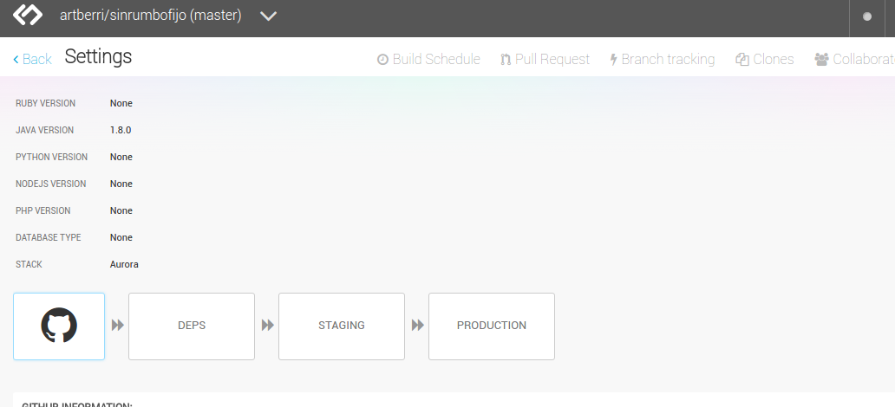
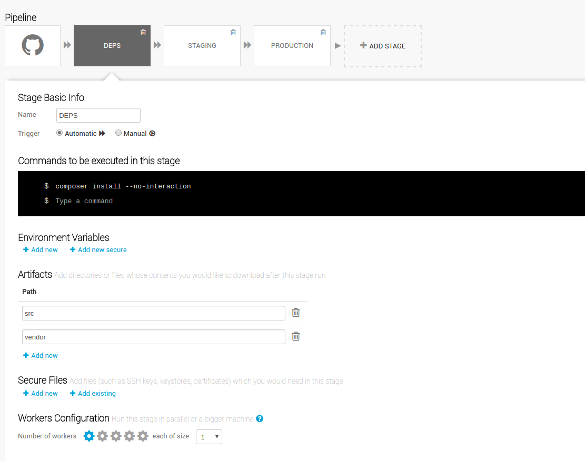
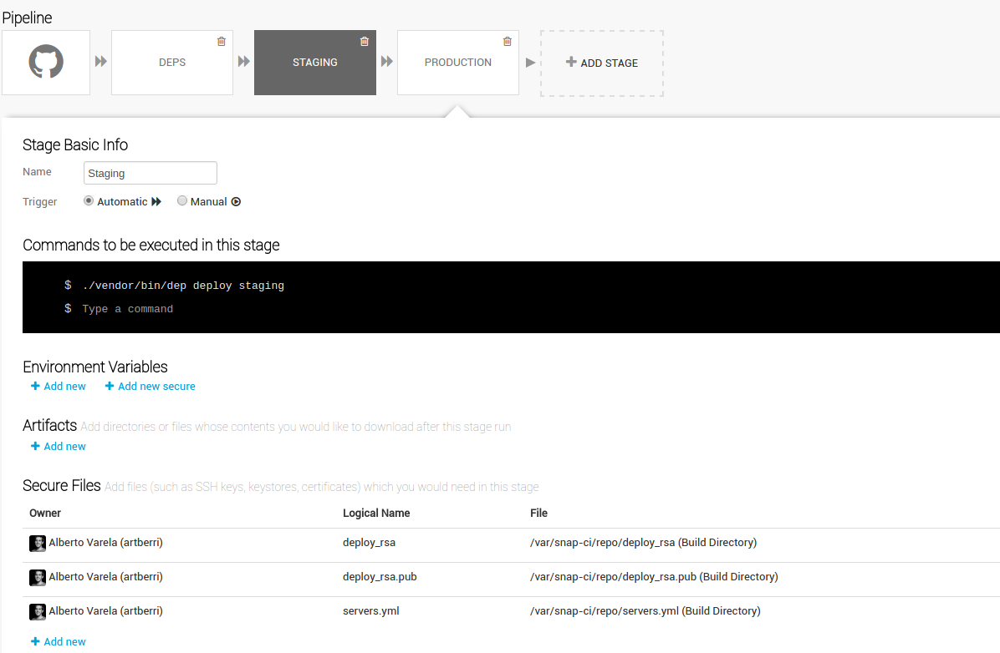
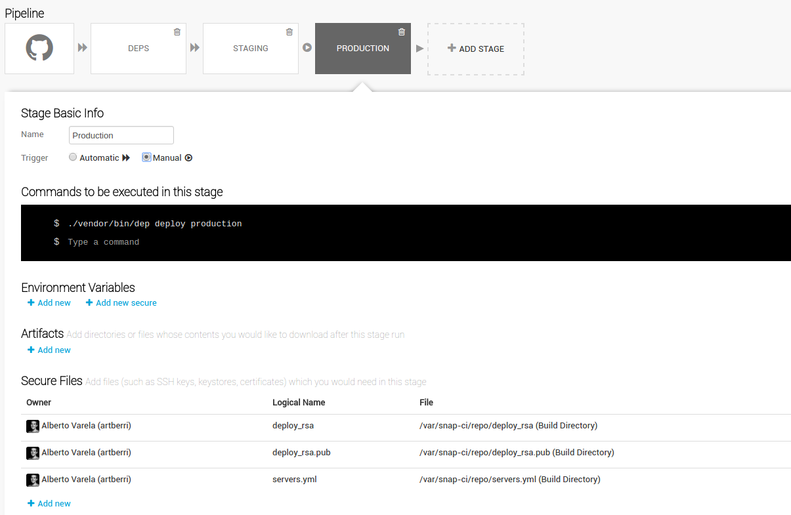
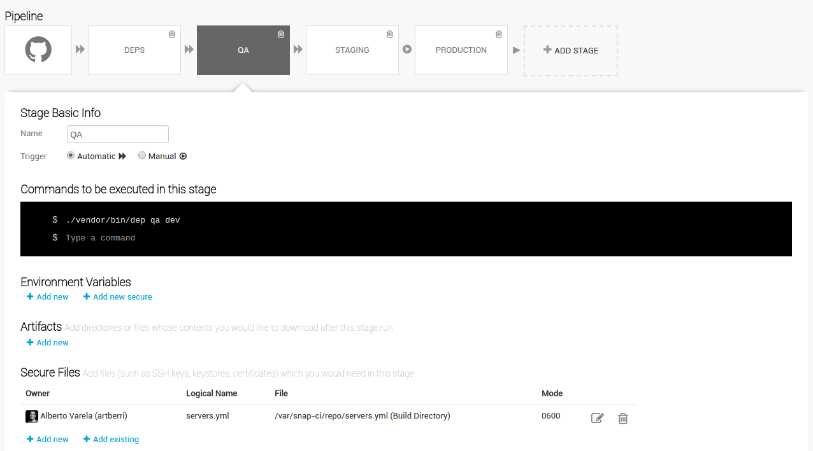
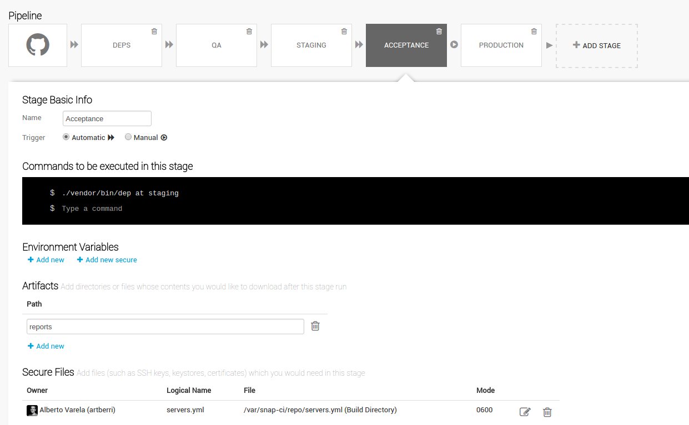
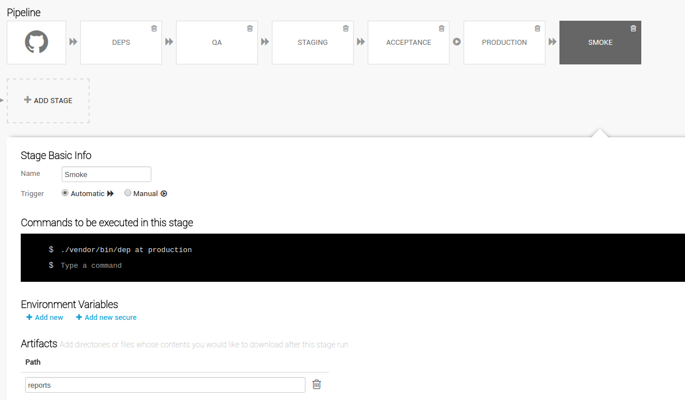
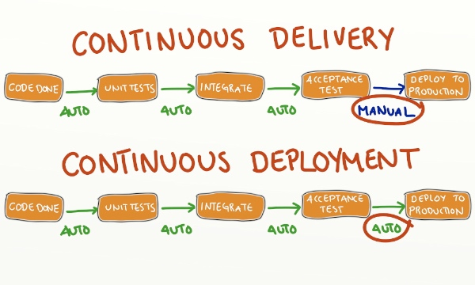

Deploying
WordPress
Like a Pro
Who is speaking?

Websites VS Professional Websites
Websites VS Professional Websites
Deployments VS Professional Deployments
Deployments VS Professional Deployments
How?
The 'Dogma'
The developers are the only responsibles of the code
People that should not upload code:
- The client
- The marketing department
- The CEO / The boss
- Matt Mullenweg
wp-config.php
You should disallow modifications from the admin panel.
<?php
// Disable the Plugin and Theme Editor
define( 'DISALLOW_FILE_EDIT', true );
// Disable Plugin and Theme Update and Installation
define( 'DISALLOW_FILE_MODS', true );
// Disable All Automatic Updates
define( 'AUTOMATIC_UPDATER_DISABLED', true );
You can find more info about configuration constants in the Wordpress Codex.
Version Control System
Git
Self hosted, Github, Bitbucket, Gitlab, VSO...
Subversion
No Pull Requests :(
Managing dependencies
Composer + WPackagist
# composer.json
{
"name": "mycompany/brilliant-wordpress-site",
"repositories":[
{
"type": "composer",
"url": "https://wpackagist.org"
}
],
"require": {
"php": ">=5.4",
"johnpbloch/wordpress": "^4.5",
"wpackagist-plugin/wordpress-seo": "^3.2",
"wpackagist-plugin/mailchimp-for-wp": "^3.1",
"wpackagist-theme/yourparenttheme": "^1.3",
}
}
WP-CLI could be another option to manage dependencies.
Your code: Themes & Plugins
- All your code should be organized in Themes & Plugins, and it's the only code that should be in the source control.
- Don't modify any dependency. Not plugins, neither themes. Use hooks, actions and child themes to override them.
Branching and pull requests
- Git workflows: Centralized, Feature Branch, Gitflow, Forking Workflow...
- Implement code review with pull requests. Check this list of rules to enhance your code review process.
Let's
make a
Pull
Request!
The 'Rule'
There is not any manual step in the deployment process
No more "Works on my machine"
Deployment Tools / Task Runners
Example with Deployer
Install it with composer:
composer require --dev deployer/deployer
composer require --dev deployphp/recipes
Your composer.json should include now a reference to the dependencies:
# composer.json
# ...
"require-dev": {
"deployer/deployer": "^3.2",
"deployphp/recipes": "^3.1",
},
# ...
Example with Deployer
Configure your deploy steps in the deploy.php file:
<?php
// deploy.php
require 'recipe/common.php';
require 'vendor/deployphp/recipes/recipes/configure.php';
require 'vendor/deployphp/recipes/recipes/rsync.php';
set('shared_dirs', [
'wp-content/uploads',
'wp-content/cache',
]);
set('shared_files', [
'wp-config.php',
]);
set('writable_use_sudo', false);
set('http_user', 'deploy');
env('rsync_src', __DIR__ . '/src');
set('rsync', [
'exclude' => [
'wp-content/upgrade',
'wp-content/cache',
'wp-config.php',
'wp-content/uploads',
],
]);
set('keep_releases', 5);
task('deploy', [
'deploy:prepare',
'deploy:release',
'deploy:configure',
'rsync',
'deploy:shared',
'deploy:symlink',
'cleanup',
])->desc('Deploy project');
after('deploy', 'success');
serverList(__DIR__ . '/servers.yml');
Example with Deployer
Configure your deployment credentials and servers in the servers.yml file:
# servers.yml
staging:
host: staging.sinrumbofijo.com
user: deploy
identity_file:
public_key: deploy_rsa.pub
private_key: deploy_rsa
password: ''
stage: staging
deploy_path: /home/www/staging.sinrumbofijo.com
app:
url: http://staging.sinrumbofijo.com
root: /home/www/staging.sinrumbofijo.com/current
db:
name: 'staging_database_name'
user: 'staging_database_user'
pass: 'staging_database_pass'
host: 'staging_database_host'
secret:
auth_key: 'write a better secret here'
secure_auth_key: 'write a better secret here'
logged_in_key: 'write a better secret here'
nonce_key: 'write a better secret here'
auth_salt: 'write a better secret here'
secure_auth_salt: 'write a better secret here'
logged_in_salt: 'write a better secret here'
nonce_salt: 'write a better secret here'
production:
host: www.sinrumbofijo.com
user: deploy
identity_file:
public_key: deploy_rsa.pub
private_key: deploy_rsa
password: ''
stage: staging
deploy_path: /home/www/www.sinrumbofijo.com
app:
url: http://www.sinrumbofijo.com
root: /home/www/www.sinrumbofijo.com/current
db:
name: 'production_database_name'
user: 'production_database_user'
pass: 'production_database_pass'
host: 'production_database_host'
secret:
auth_key: 'write a better secret here'
secure_auth_key: 'write a better secret here'
logged_in_key: 'write a better secret here'
nonce_key: 'write a better secret here'
auth_salt: 'write a better secret here'
secure_auth_salt: 'write a better secret here'
logged_in_salt: 'write a better secret here'
nonce_salt: 'write a better secret here'
Example with Deployer
And now, deploy is as simple as:
./vendor/bin/dep deploy staging
./vendor/bin/dep deploy production
Continous Integration Tools
You can see a detailed comparison in Stackshare.
Example with Snap.CI
Example with Snap.CI

Example with Snap.CI

Example with Snap.CI

Example with Snap.CI

So...
Would you
dare to
make a deploy
right now?
The 'Better'
There is not any manual step in the QA / Test process
Before Deployment
Linting
Ensure all the team use the same (and the proper) coding conventions with PHP_CodeSniffer, it will also help you avoiding some errors.
Install PHP_CodeSniffer with composer:
composer require --dev squizlabs/php_codesniffer
composer require --dev wp-coding-standards/wpcs:dev-master
# composer.json
# ...
"require-dev": {
"squizlabs/php_codesniffer": "^2.6",
"wp-coding-standards/wpcs": "dev-master",
},
# ...
Linting
Configure your rules in the phpcs.xml file.
<!-- phpcs.xml -->
<?xml version="1.0"?>
<ruleset name="PHP_CodeSniffer">
<description>The coding standard for PHP_CodeSniffer itself.</description>
<file>src/wp-content/themes/your-theme</file>
<file>src/wp-content/plugins/your-plugin1</file>
<file>src/wp-content/plugins/your-plugin2</file>
<arg name="report" value="summary"/>
<arg value="np"/>
<rule ref="PEAR.WhiteSpace.ScopeIndent">
<properties>
<property name="indent" value="2"/>
</properties>
</rule>
<rule ref="vendor/wp-coding-standards/wpcs"/>
</ruleset>
Linting
Add the task to your task runner.
<?php
// deploy.php
require 'recipes/qa.php';
<?php
// recipes/qa.php
task('qa:phpcs', function () {
$output = runLocally('./vendor/bin/phpcs');
writeln('' . $output . ' ');
})->desc('Run PHPCS');
task('qa', [
'qa:phpcs',
])->desc('Code quality checks');
Linting
Other linting tools:
Unit Testing
Do the things right
Yes, you can (should) unit test your themes and plugins.
WP_Mock is built and maintained by 10up where Lucy Tomas works, she is giving a talk after lunch
Unit Testing
Install them with composer:
composer require --dev phpunit/phpunit
composer require --dev 10up/wp_mock:dev-master
# composer.json
# ...
"require-dev": {
"phpunit/phpunit": "^4.8",
"10up/wp_mock": "dev-master",
},
# ...
Unit Testing
Configure phpunit in the phpunit.xml file.
<!-- phpunit.xml -->
<phpunit bootstrap="tests/bootstrap.php">
<testsuites>
<testsuite name="projectname">
<directory>tests</directory>
</testsuite>
</testsuites>
<filter>
<whitelist processUncoveredFilesFromWhitelist="true">
<directory suffix=".php">src/wp-content/themes/your-theme</directory>
</whitelist>
</filter>
<logging>
<log type="coverage-html" target="reports/html/phpunit/coverage" lowUpperBound="35"
highLowerBound="70"/>
<log type="coverage-text" target="php://stdout" showUncoveredFiles="false"/>
<log type="junit" target="reports/phpunit.results.xml" logIncompleteSkipped="false"/>
</logging>
</phpunit>
Unit Testing
Add the task to your task runner.
<?php
// recipes/qa.php
task('qa:phpunit', function () {
$output = runLocally('./vendor/bin/phpunit');
writeln('' . $output . ' ');
})->desc('Run PHPUnit');
task('qa:phpcs', function () {
$output = runLocally('./vendor/bin/phpcs');
writeln('' . $output . ' ');
})->desc('Run PHPCS');
task('qa', [
'qa:phpcs',
'qa:phpunit',
])->desc('Code quality checks');
Execute:
./vendor/bin/dep qa
Add them to your building pipeline

After Deployment
Functional Testing
Do the right things
Yes, you can (should) do functional testing on your Wordpress website.
Functional Testing
Install them with composer:
composer require --dev behat/behat
composer require --dev behat/mink-extension
composer require --dev behat/mink-goutte-driver
composer require --dev behat/mink-selenium2-driver
composer require --dev se/selenium-server-standalone
# composer.json
# ...
"require-dev": {
"behat/behat": "~3.0.6",
"behat/mink-extension": "^2.2",
"behat/mink-goutte-driver": "^1.2",
"behat/mink-selenium2-driver": "^1.3",
"se/selenium-server-standalone": "^2.53"
},
# ...
Functional Testing
Configure Behat in the behat.yml file.
# behat.yml
default:
extensions:
Behat\MinkExtension:
base_url: 'http://yoursite.local'
browser_name: 'firefox'
sessions:
default:
goutte: ~
browser:
selenium2: ~
javascript_session: 'browser'
emuse\BehatHTMLFormatter\BehatHTMLFormatterExtension:
name: html
renderer: Twig,Behat2
file_name: index
print_args: true
print_outp: true
loop_break: true
formatters:
pretty: true
html:
output_path: %paths.base%/reports/html/behat
staging:
extensions:
Behat\MinkExtension:
base_url: 'http://staging.yoursite.com'
production:
extensions:
Behat\MinkExtension:
base_url: 'http://www.yoursite.com'
Functional Testing
Define some tests (and implement them of course)
@mink:browser
Feature: Article
In order to interact with the author
As a user
I need to be able to read and comment articles or navigate to related info
Background:
Given I am on the homepage
And I hover over the element ".smartlib-grid-list article.post .wp-post-image"
And I click on ".smartlib-grid-list article.post .smartlib-caption-link"
@smoke
Scenario: See sections
Then I should see "Deja un comentario"
And I should see "Entradas relacionadas"
And I should see "Entradas recientes"
Scenario: Make a comment
When I fill in the following:
| author | Testuser |
| email | test@example.com |
| url | http://example.com |
And I fill in "comment" with 15 random words
And I press "Publicar comentario"
Then I should see "Testuser"
Functional Testing
Add the task to your task runner.
<?php
// recipes/at.php
task('at', function () {
$stage = env('app.stage');
$testCommand = './vendor/bin/behat';
if ('dev' != $stage) {
$testCommand .= ' --profile=' . $stage;
}
$seleniumPid = runLocally('nohup ./vendor/bin/selenium-server-standalone > /dev/null 2> /dev/null & echo $!');
writeln('Selenium running with pid: ' . $seleniumPid . ' ');
writeln('Waiting until selenium is started ');
$output = runLocally('sleep 7');
writeln('Selenium started ');
$output = runLocally($testCommand, 600);
writeln('' . $output . ' ');
$output = runLocally('kill ' . $seleniumPid);
writeln('Selenium stopped ');
})->desc('Run Acceptance Tests');
Execute:
./vendor/bin/dep at staging
Add them to your building pipeline

Add them to your building pipeline

Finally, we have implemented...
Continous Delivery
Finally, we have implemented...
Continous Deployment
Continous Delivery
VS
Continous deployment

Take a look to this post for more info.
Yes,
I remember
the deployment.
Let's see
if it sucess!
Links of a full example
Good job!
Thank you

Any Question?